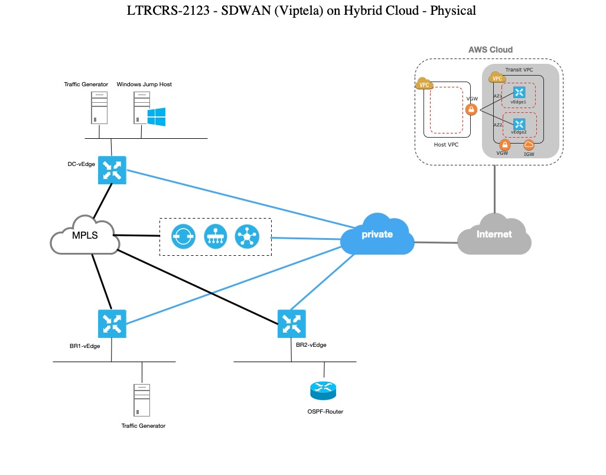

Lab Topology

IP Addressing
| Hostname | IP Address | Credentials |
|---|---|---|
| Windows Jump Station | 198.18.133.36 | administrator/C1sco12345 |
| vManage | 198.18.1.10 | admin/admin |
| vSmart | 198.18.1.12 | admin/admin |
| vBond | 198.18.1.11 | admin/admin |
Pod specific Public IP addresses, AWS management console link and credentials can be found in LTRCRS2123 - Lab Pod Sheets - CLUS 2019.xls file within following box folder:
https://bit.ly/2KcPg10